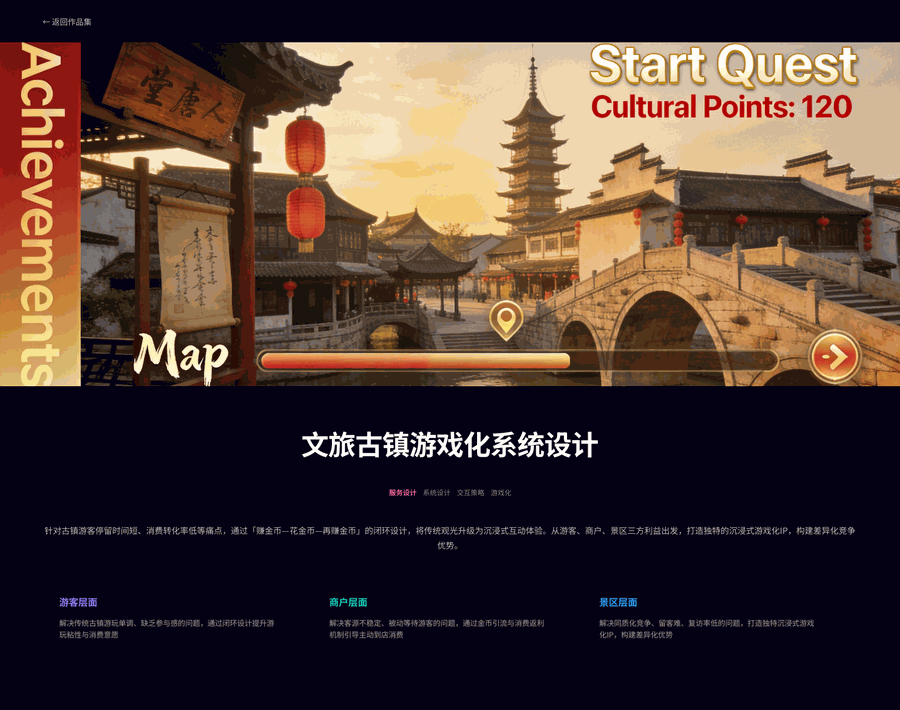

PART.04 · Cultural Tourism Design
文旅古镇视觉设计
以古镇文化为核心的文旅品牌视觉与传播设计项目。深入挖掘古镇的历史文化、建筑特色与民俗风情，通过现代视觉语言重新诠释传统元素，打造兼具文化底蕴与时尚感的文旅品牌形象，助力古镇文化的传承与旅游推广。

设计维度
文化挖掘
深入研究古镇的历史脉络、建筑风格与民俗文化，提取具有地域辨识度的视觉符号。
品牌塑造
以现代设计语言重构传统元素，打造年轻化、时尚化的文旅品牌视觉体系。
传播延展
品牌视觉延展至导览图、文创周边、社交媒体与线下空间，形成完整的文旅传播体验。